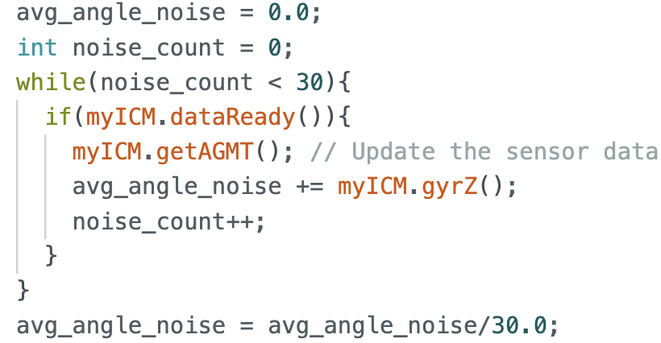
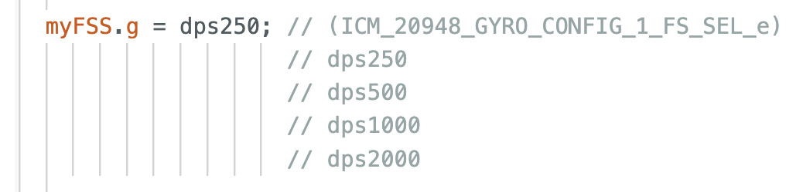
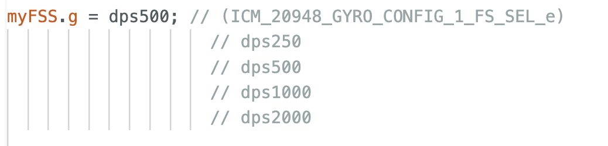
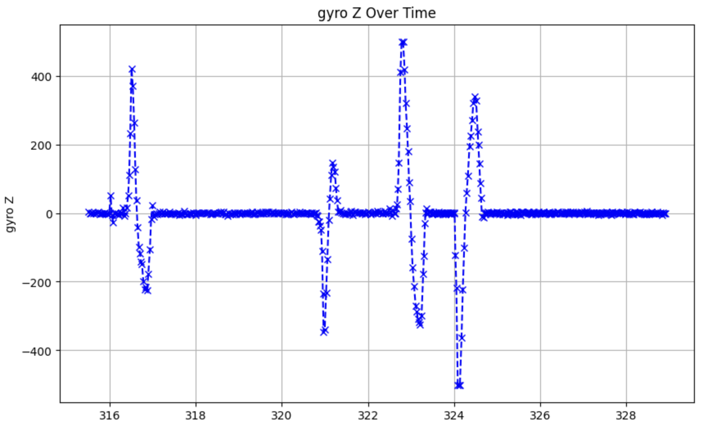
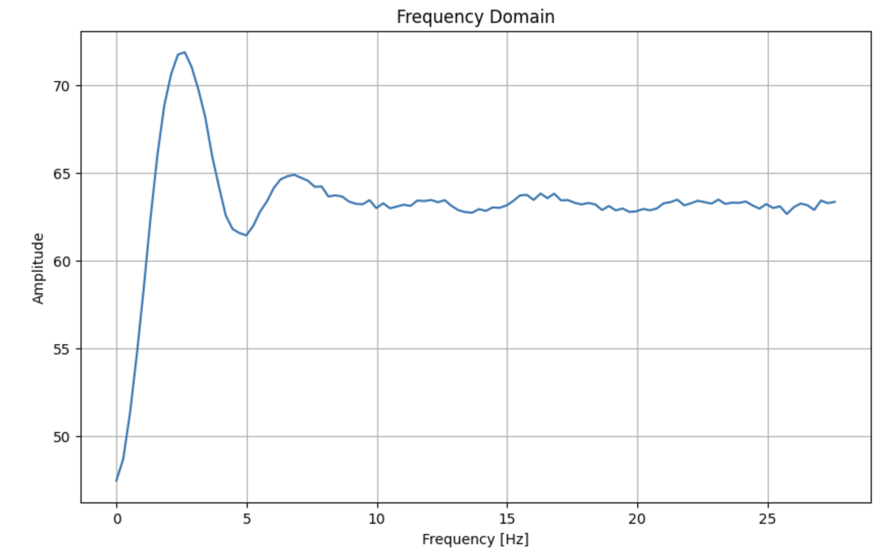

Discussion
Are there any problems that digital integration might lead to over time? Are there ways to minimize these problems?
In digital integration, especially within the Integral component of a PID controller, there's a potential for what's called "integral windup." This occurs when the integral term accumulates a significant error over time, especially during periods when the actuator is saturated (cannot increase output further). This can lead to the system overshooting its target and exhibiting oscillatory behavior, which can be slow to correct.
Integrator wind-up
When the car remains stationary and the error is non-zero, the integral term will persistently accumulate. This causes the integral term's contribution to the PWM signal to increase until the motor reaches saturation. Beyond this point, the integral term continues to grow, surpassing the saturation level of the motor. It will start to decrease only when the car moves past the set angle which when the error changes the sign, as how the orange line draws on the screenshot above.
These are the conditions under which I prevent the integrator from accumulating further value:
First, I halt the increase of the integral term or stop its accumulation when the controller output is saturated, which I set max 60 duty cycles from itegral part, to prevent the integral term from increasing further.
Second, as observed from the graph "All data over time" above, the integral part (represented by the orange line), which is the product of the integral gain (Ki) and the accumulated distance error in this lab, continues to increase until the error becomes negative. Therefore, I prevent the integrator from accumulating when the controller output's sign matches the error's sign. In other words, as soon as the error changes sign, I release the clamp on the integrator term, allowing it to decrease immediately. This approach helps to limit overshoot.
Does your sensor have any bias, and are there ways to fix this?
As is widely known, gyroscope sensors are prone to data drifting. I visualized this data drift by measuring the angle while keeping the car stationary.

There are several methods to mitigate data drifting. My approach involved accumulating 30 data points of the yaw value while the car was stationary, just before it began to move. I then calculated the average value of this noise. By subtracting this average noise value from subsequent yaw data measurements, I was able to significantly reduce the impact of data drift.

Are there limitations on the sensor itself to be aware of?
As demonstrated in the screenshot below, by default, the gyroscope (referred to as myFSS.g) of this IMU is limited to sensing angle changes at a maximum rate of 250 degrees per second.
I verified that my car reached this limitation by practically rotating the car on the floor, capturing the yaw data (myICM.gyrZ()), and graphing the results using Python, as displayed below.

After increasing the speed limitation to 500 degrees per second, I repeated the graphing of the yaw data to ensure that the limitation was not exceeded.


The issue with the previous limitation was that the sensor's maximum sensing speed was reached, so ,for example, even though the car actually rotated 120 degrees, the sensor could only register a 90-degree rotation. This discrepancy was the cause of the observed overshooting.
Does it make sense to take the derivative of a signal that is the integral of another signal?
In this orientation control lab, the angle signal is obtained from the integral of the yaw rotation velocity. The derivative term in a PID controller is utilized to compute the derivative of the error signal, which represents the discrepancy between the desired angle (setpoint) and the current angle. This term plays a crucial role in forecasting future errors and mitigating changes in the error. Given that the angle signal in this lab is derived by integrating rotational velocity, applying the derivative to the accumulated angle—which would yield the error's rate of change—might seem redundant. This is because the derivative term can be directly obtained from reading the gyro rotational velocity along with Z axis. Overall, the derivative term remains valuable for anticipating and correcting future errors, thereby reducing oscillations and improving the stability of the system.
Does changing your setpoint while the robot is running cause problems with your implementation of the PID controller?
In this experiment, potential issues from sudden error changes are mitigated by two factors. First, the motor used responds too slowly to react immediately to abrupt changes in error. Second, there's a limitation on the maximum rotational velocity that further reduces the impact of any rapid error fluctuations.
Is a lowpass filter needed before your derivative term?
First, as demonstrated by all the screenshots above, the contribution of the derivative term to the PWM duty cycles does not result in significant spikes.
Also, after conducting FFT analysis on the derivative term multiple times, it appears that implementing a low-pass filter is not necessary.

This is essential for being able to tune the PID gains/Set points quickly.
Will you need to be able to update the setpoint in real time?
In my setup, I've configured the case statement in the Arduino IDE to accept commands from the Jupyter Notebook. This setup enables the separate transmission of PID parameters and the setting of the target angle. As a result, my implementation allows for easy adjustments to the set angle by sending commands from the Jupyter Notebook to the robot via Bluetooth in real-time, as well as the modification of PID parameters on-the-fly.
Can you control the orientation while the robot is driving forward or backward?
I've realized that the stunt car can only rotate to a set angle and stops once the error—the difference between the set angle and the current angle—falls within an acceptable range of +/- 5 degrees, in this lab. To enhance this functionality, I could introduce a base duty cycle for the PWM signals sent to the motors. This would enable the car to continuously move forward or backward. At the same time, it could adjust the direction by controlling one specific motor. By adding extra duty cycle to the motor controlling one side of the wheels, for example, adding controls to the right side of wheels while the car is moving forward would allow the car to turn left.